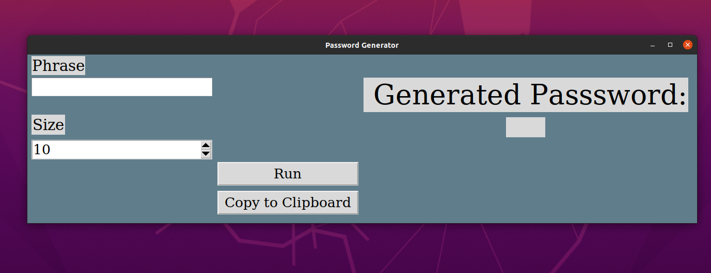
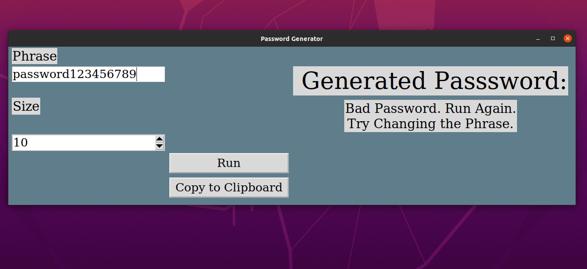
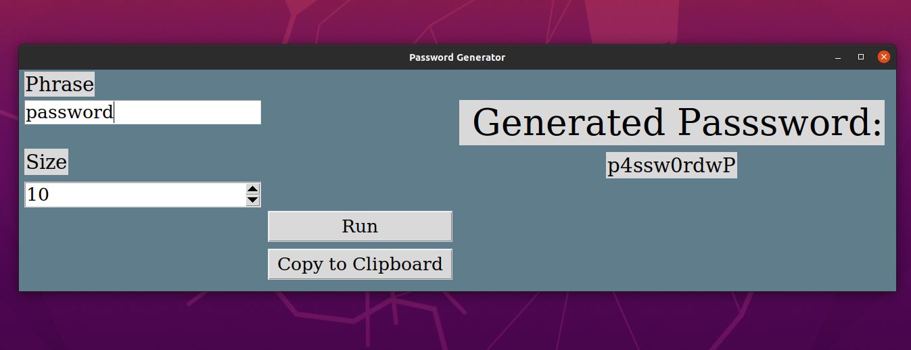
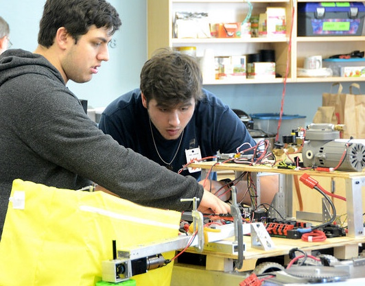
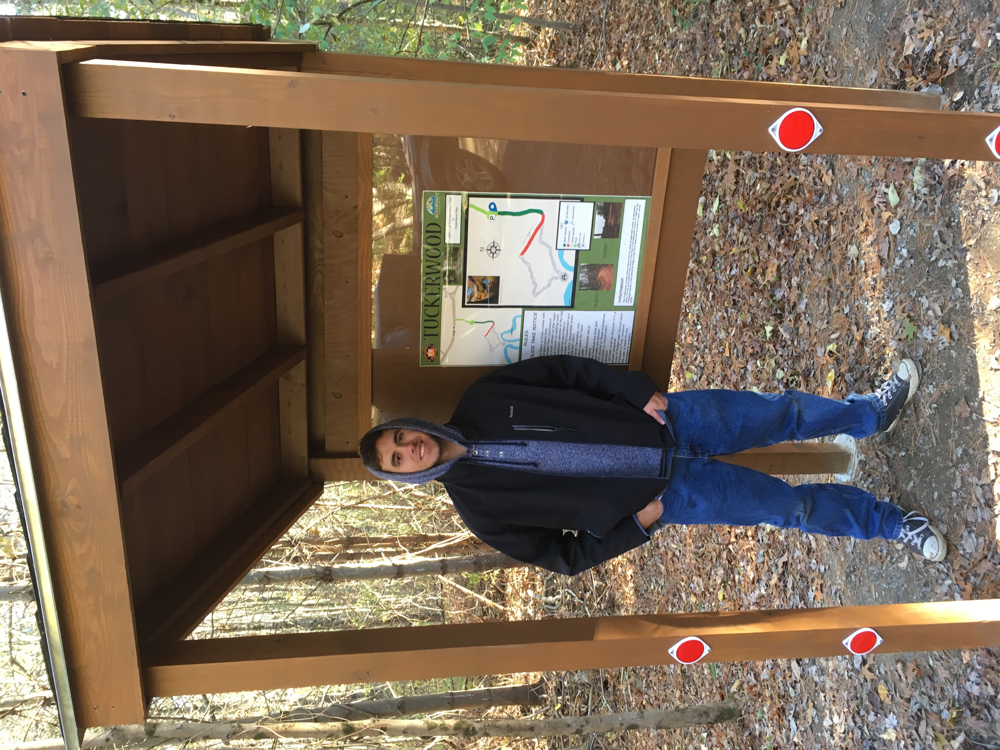

Projects Page
Password Generator
The Password Generateor was developed in May 2020 right after the Spring Semester concluded. It was made to help generate safe passwords for users as well as to learn Python. The password generator recives a phrase and a password length from the user. It then manipulates that phrase to be a stronger, safer password, and then adds or removes characters so it is the desired length. It then runs the password through a hashing algorithm to see if the password has already been cracked, and if it is a new password it is displayed for the user to copy to their clipboard.
  This Website
This website was first constructed in May and June 2020 as a way to self-teach HTML, CSS, and Javascript. It's designed to allow potiential employers and peers to view projects that I participated and just as form of personal expression.
High School Projects
While the following activities/projects are from years ago, they made massive impacts on my charactacter and led me to the career I am working towards today.
TJ^2 Robotics
I was a member of TJ^2, which was Bridgewater-Raynham Regional High School's FIRST robotics team. I joined sophomore year, where I primatily worked on assembly. But from there I joined the strategy group and developed my interpersonal skills and data analytics, by senior year I was a member of the programming team. I was taking my first programming course at the time, but I got my feet wet working on the robot's intake mechanism, as well as coding some of it's sensors. That first experience planted the seed that later pushed me to changing my major to computer science.
Eagle Project
This project was conducted throughout 2017 and 2018 as a requirement to attain the rank of Eagle in the Boy Scouts of America. I worked with the community to fundraise, and build a kiosk for a local trail in Bridgwater Massachusetts which had been abandoned. In addition to the kiosk the trail was cleaned up, altared, and cartographed. Unfortunately it was vandlaized in 2019.
